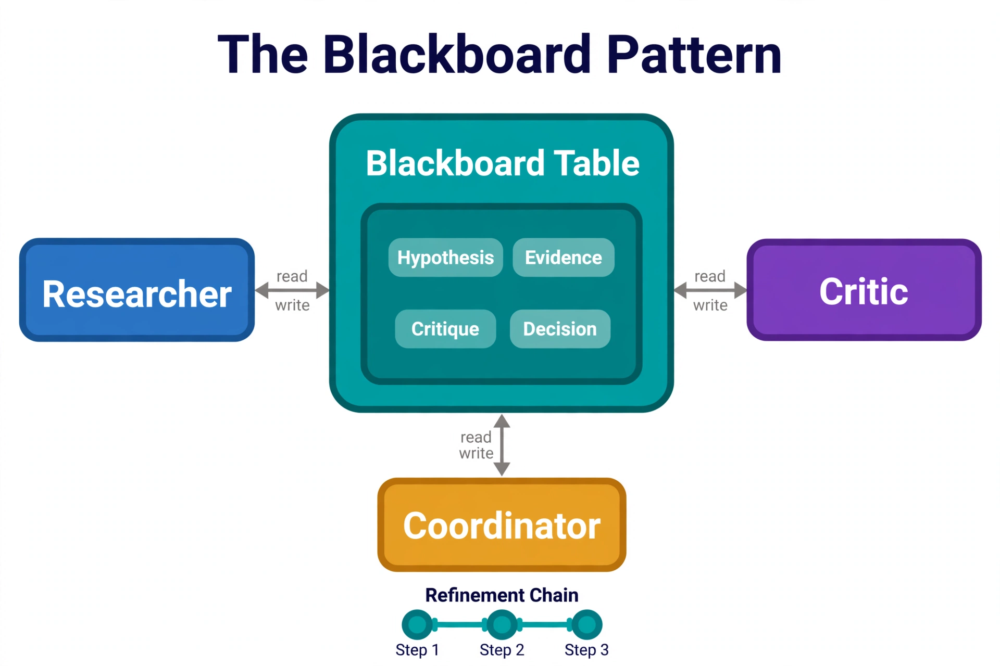

One agent is a tool user; many agents are a system. Multi-agent architectures split work across specialized agents — a researcher, a writer, a critic, a coder — that must coordinate: divide tasks, share intermediate results, avoid duplicating work, and converge on a final answer. SQL Server is the coordination substrate: a shared blackboard every agent reads and writes, with the transactional guarantees that keep concurrent agents consistent. This chapter builds the coordination patterns — blackboard, task queues, leader election, and conflict resolution — that turn a crowd of agents into a team.
---
26.1 The Blackboard Pattern

The teal hub is a real table, not a metaphor: agents post typed entries — hypotheses from the Researcher, critiques from the Critic, decisions from the Coordinator — and every entry is versioned and attributed. The read/write arrows are the only communication paths; there are no agent-to-agent arrows by design, so no coordination happens off the record. The Refinement Chain at the bottom shows the payoff: each pass over the blackboard sharpens the previous entries, and because everything lives in SQL Server you can replay exactly who wrote what, when.
The blackboard is a shared workspace where agents post hypotheses, evidence, and partial results. Every agent sees everything; coordination emerges from the shared state rather than direct messaging:
-- The blackboard: shared, versioned, attributed workspace per run
CREATE TABLE dbo.blackboard (
entry_id UNIQUEIDENTIFIER PRIMARY KEY DEFAULT NEWID(),
run_id UNIQUEIDENTIFIER NOT NULL, -- the multi-agent run
agent_name NVARCHAR(100) NOT NULL, -- 'researcher', 'critic', ...
entry_type NVARCHAR(30) NOT NULL
CONSTRAINT CK_bb_type CHECK (entry_type IN
(N'hypothesis', N'evidence', N'partial_result',
N'critique', N'decision', N'note')),
content NVARCHAR(MAX) NOT NULL,
confidence DECIMAL(3,2) NULL,
supersedes_id UNIQUEIDENTIFIER NULL -- refinement chain
CONSTRAINT FK_bb_supersedes REFERENCES dbo.blackboard(entry_id),
created_at DATETIME2 NOT NULL DEFAULT SYSUTCDATETIME()
);
CREATE INDEX IX_bb_run ON dbo.blackboard(run_id, created_at);
-- Agents read the current state: latest non-superseded entries by type
CREATE OR ALTER PROCEDURE dbo.usp_blackboard_snapshot
@run_id UNIQUEIDENTIFIER
AS
BEGIN
SET NOCOUNT ON;
SELECT agent_name, entry_type, content, confidence, created_at
FROM dbo.blackboard
WHERE run_id = @run_id
AND NOT EXISTS (SELECT 1 FROM dbo.blackboard AS s
WHERE s.supersedes_id = blackboard.entry_id)
ORDER BY created_at;
END;
GOThe refinement chain (supersedes_id) is what keeps the blackboard from becoming an append-only swamp: agents improve each other's entries rather than piling contradictions, and the snapshot always shows the current best understanding.
---
26.2 Task Distribution: The Work Queue
For divisible work (research these 20 questions, review these 50 documents), a task queue with claim semantics distributes work across agents — the same pattern as §13.2's ingest queue, extended with dependencies:
CREATE TABLE dbo.agent_tasks (
task_id UNIQUEIDENTIFIER PRIMARY KEY DEFAULT NEWID(),
run_id UNIQUEIDENTIFIER NOT NULL,
parent_task_id UNIQUEIDENTIFIER NULL -- dependency: run after parent
CONSTRAINT FK_at_parent REFERENCES dbo.agent_tasks(task_id),
task_type NVARCHAR(100) NOT NULL,
payload JSON NOT NULL,
status NVARCHAR(20) NOT NULL DEFAULT N'pending'
CONSTRAINT CK_at_status CHECK (status IN
(N'pending',N'claimed',N'done',N'failed')),
claimed_by NVARCHAR(100) NULL, -- agent name
claimed_at DATETIME2 NULL,
result JSON NULL,
attempts INT NOT NULL DEFAULT 0,
created_at DATETIME2 NOT NULL DEFAULT SYSUTCDATETIME()
);
-- Claim only tasks whose parents are done (dependency-aware scheduling)
CREATE OR ALTER PROCEDURE dbo.usp_claim_agent_task
@run_id UNIQUEIDENTIFIER, @agent_name NVARCHAR(100)
AS
BEGIN
SET NOCOUNT ON;
UPDATE TOP (1) dbo.agent_tasks WITH (READPAST, UPDLOCK)
SET status = N'claimed', claimed_by = @agent_name,
claimed_at = SYSUTCDATETIME(), attempts = attempts + 1
OUTPUT INSERTED.task_id, INSERTED.task_type, INSERTED.payload
WHERE run_id = @run_id AND status = N'pending'
AND (parent_task_id IS NULL OR EXISTS (
SELECT 1 FROM dbo.agent_tasks AS p
WHERE p.task_id = agent_tasks.parent_task_id
AND p.status = N'done'))
OR (status = N'claimed' AND claimed_at < DATEADD(minute, -10, SYSUTCDATETIME())
AND run_id = @run_id);
END;
GODependencies turn the queue into a DAG scheduler: the planner agent decomposes the goal into tasks with parent links, and worker agents claim whatever is ready. Failed tasks return to pending for retry (with attempt counts bounding infinite loops).
---
26.3 Leader Election and the Coordinator Agent
Some decisions need a single decider: final answer synthesis, conflict resolution, run termination. Elect a coordinator with sp_getapplock — the same primitive as §7.2's turn lock:
-- Coordinator election: first agent to grab the run-scoped lock leads.
-- Others proceed as workers; if the coordinator dies, its connection drops
-- and the lock releases for re-election.
CREATE OR ALTER PROCEDURE dbo.usp_elect_coordinator
@run_id UNIQUEIDENTIFIER, @agent_name NVARCHAR(100)
AS
BEGIN
SET NOCOUNT ON;
DECLARE @rc INT;
EXEC @rc = sp_getapplock
@Resource = @run_id, @LockMode = 'Exclusive',
@LockOwner = 'Session', @LockTimeout = 0; -- no wait: election, not queue
IF @rc = 0
UPDATE dbo.agent_runs
SET status = N'running'
OUTPUT INSERTED.run_id
WHERE run_id = @run_id;
-- Caller: @rc = 0 → you are the coordinator (hold the connection!).
-- @rc = -1 → someone else leads; work as a regular agent.
END;
GOThe coordinator's job is convergence: watch the blackboard, detect when the evidence supports a decision, resolve contradictions (next section), and terminate the run. Keep coordinator logic simple — it is the hardest agent to debug because its failures look like everyone else's confusion.
---
26.4 Conflict Resolution Between Agents
Agents disagree: the researcher says the refund window is 30 days, the critic's document search says 60. Resolution strategies, escalating:
Record every resolution as a decision entry on the blackboard with the losing hypothesis preserved — the decision log is what makes multi-agent behavior explainable after the fact.
---
26.5 Termination: Knowing When to Stop
Agent runs must terminate. The coordinator checks three conditions after each blackboard update:
Budgets are set at run creation and enforced by the coordinator querying agent_actions counts and the audit log's token sums. Every run gets a budget — unbounded agent runs are a billing incident with extra steps.
---
26.6 Run Telemetry: Debugging the Team
Multi-agent runs are the hardest thing in this book to debug — five agents, dozens of tool calls, emergent behavior. Make every run self-describing: the agent_runs table records the goal, the plan DAG, the coordinator's decisions, and the termination reason; the blackboard preserves the full reasoning trace; the audit log prices it. Build one run-timeline view that interleaves blackboard entries, tool calls, and coordinator decisions chronologically — the equivalent of a distributed trace for agents. When a run goes wrong, the timeline answers the three debugging questions in order: what did each agent believe (blackboard), what did each agent do (actions), and why did the coordinator decide what it decided (decisions). Without this, multi-agent debugging is reading tea leaves.
---